Before you start assembling a robot, you need to know what all the parts are. This lesson walks you through every type of hardware you will handle, explains how sizes and measurements work, introduces the tools used for assembly, and covers the mistakes that mess up parts so you can avoid them.
No coding in this lesson -- just read, study the pictures, and take notes. By the end, you will be able to pick up any part from a robotics kit and know exactly what it is, what it does, and how to use it correctly.
Robotics building systems use metric hardware. That means every screw, nut, shaft, and bearing is measured in millimeters (mm), not inches. If you have worked with inch-based hardware before (like 1/4-20 bolts from a hardware store), you will need to shift your thinking.
The most important number you will see is the M number.
millimeters. M4 means the shaft is 4mm across. M3 means 3mm across. A bigger M number means a bigger screw.
Most robotics building systems are built almost entirely around M4 hardware. M4 screws, M4 nuts, M4 washers -- it is the standard size. You will occasionally see M3 screws for smaller components like sensors, but M4 is the bread and butter of robot assembly.
Why does this matter? Because if someone hands you a screw and says "grab an M4x12", you now know exactly what that means: a screw with a 4mm diameter shaft that is 12mm long. The first number is always the diameter, the second is always the length.
Screws hold a robot together. A typical robot uses hundreds of them. Let's break down the types you will encounter.
The most common screw in robotics is the **socket head cap screw** (often just called a "hex head screw" or "cap screw"). It has a cylindrical head with a hexagonal hole in the top. You drive it with a hex key (Allen wrench).
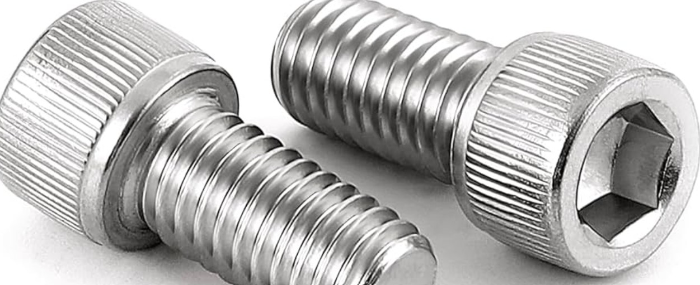
The hexagonal socket in the head is what gives this screw its name. For M4 screws, the hex socket takes a **3mm hex key**. This is the single most important tool-to-screw pairing you need to remember.
Screws come in different lengths. The length is measured from under the head to the tip -- the head itself does not count.
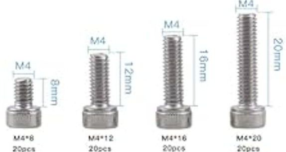
Common M4 lengths include 8mm, 12mm, 16mm, and 20mm. Choosing the right length matters -- too short and the screw will not reach the nut or threads on the other side. Too long and it will poke through and interfere with other parts.
first number is the diameter (4mm), the second is the length in mm. Length is measured from under the head to the tip.
the parts you are bolting together, then add about 3-4mm for the nut to grab onto the threads. If you are bolting two 4mm aluminum channels together, you need at least 8mm of screw plus 3-4mm for the nut -- so an M4x12 is a good choice.
Another common type is the thread-forming screw. These look like regular screws but have a special aggressive thread pattern. Instead of screwing into a pre-threaded hole or a nut, they cut their own threads as you drive them in.
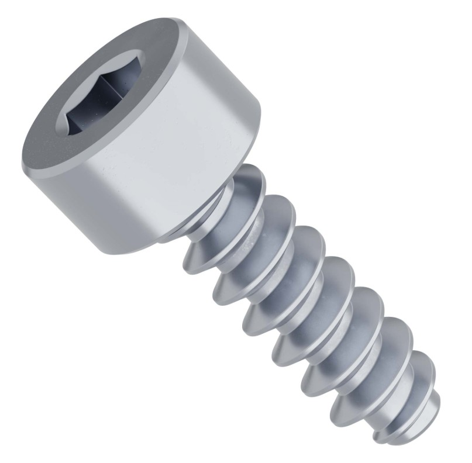
Thread-forming screws go directly into the pre-drilled holes in aluminum channels and plates. The hole has no threads -- the screw creates them the first time you drive it in. This is fast and convenient, but be careful: if you over-tighten a thread-forming screw or screw and unscrew it many times, it can strip the hole. We will talk more about stripping later.
A nut threads onto the end of a screw to clamp parts together. You tighten the screw from one side and hold the nut on the other.
The most common nut in robotics is the nylon lock nut (also called a "nylock nut"). It looks like a regular hex nut, but it has a small ring of nylon plastic built into one end.
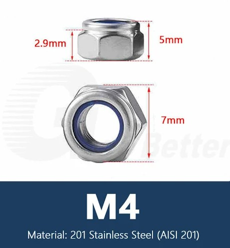
That nylon ring is the key feature. When the screw threads into the nylon, the plastic squeezes against the threads and creates friction. This prevents the nut from vibrating loose during a match. On a robot that is driving, turning, and slamming into things, vibration will loosen regular nuts within minutes. Nylon lock nuts stay put.
screw threads to resist vibration. Always use them on a robot -- regular nuts will loosen and fall off.
resistance increase once the screw hits the nylon. This is normal -- keep turning. It takes noticeably more effort than a regular nut, especially the first time.
Washers are thin discs with a hole in the center. They sit between the screw head (or nut) and the surface being clamped. Simple idea, but they solve several real problems.
A flat washer spreads the clamping force of the screw over a wider area. Without it, the screw head presses directly into the surface, which can dent soft aluminum or dig into a channel's paint. The washer protects the surface and gives a more even grip.
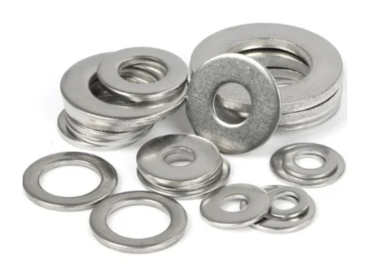
Flat washers also cover oversized holes. If the hole in a bracket is slightly larger than the screw head, a washer bridges the gap and prevents the screw from pulling through.
A split lock washer (also called a "spring washer") is a washer that has been cut and bent so it is not flat -- it forms a small spring shape. When you tighten the screw, the washer compresses flat and pushes back like a spring, keeping constant pressure on the joint. This helps prevent loosening.
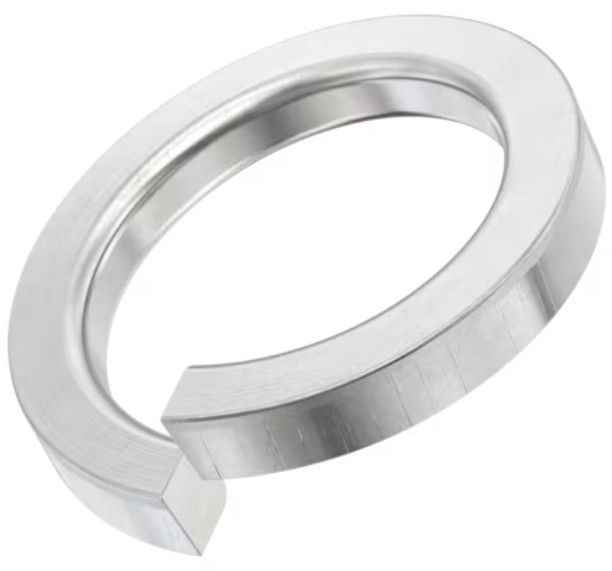
reliable than split lock washers for preventing loosening. But split washers still have their place -- especially in joints where you cannot fit a nut on the back side.
You will see the abbreviations ID and OD constantly when working with washers, bearings, spacers, shims, and any part with a hole through it.
OD = Outside Diameter -- the total size of the part. Both are measured in millimeters.
For example, a washer with an ID of 4.1mm and an OD of 9mm has a 4.1mm hole (just big enough for an M4 screw to slide through) and the outer edge measures 9mm across. These two numbers tell you everything you need to know about fit: will the screw go through the hole (check ID), and will the washer cover the surface you need it to cover (check OD)?
This same ID/OD concept applies to bearings, spacers, shims, and any other round part with a hole.
Spacers and shims are both used to fill gaps and set precise distances between parts, but they work at different scales.
A spacer is a small metal cylinder -- a tube -- that slides over a screw or shaft. It holds two parts a fixed distance apart.
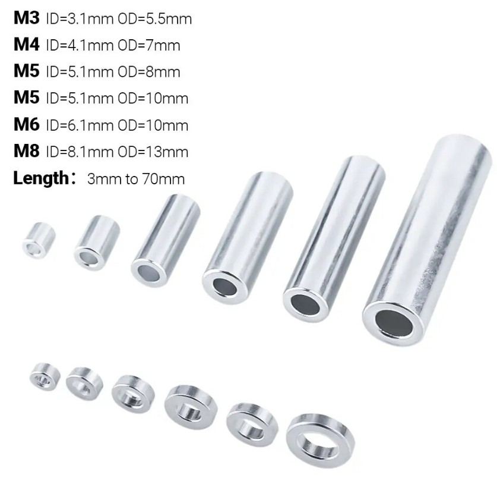
Notice in the image above how spacers are described by their M size, ID, OD, and available lengths. An M4 spacer has an ID of 4.1mm (just big enough for an M4 screw), an OD of 7mm, and comes in lengths from 3mm to 70mm.
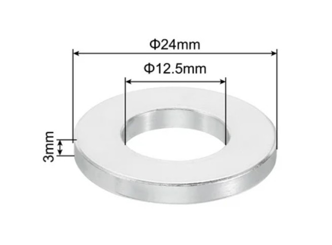
Spacers are essential for setting things like wheel spacing on a shaft, gap distances between channel walls, and alignment of gears and sprockets that need to mesh precisely.
A shim is like a very thin washer -- usually just 1mm or even 0.5mm thick. Shims are used for fine-tuning alignment.
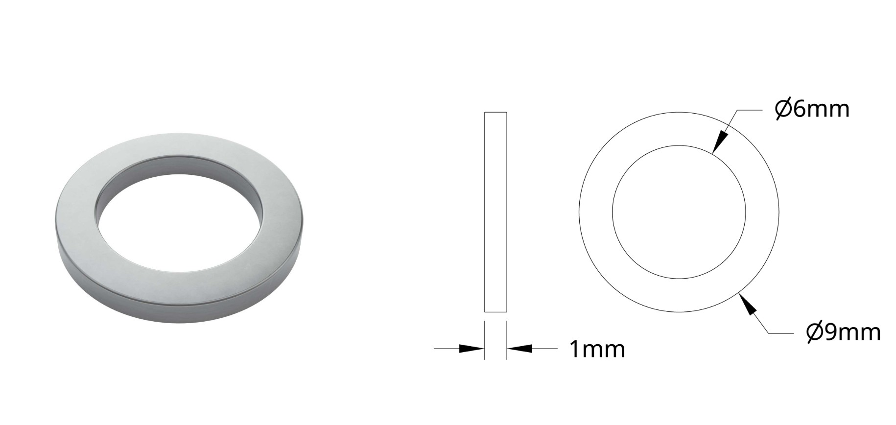
Imagine you have a gear on a shaft and it is rubbing against the side plate by just a tiny bit. You cannot fix that with a spacer -- even the thinnest spacer is too much. A 1mm shim slides in and gives you that perfect micro-adjustment. Shims are the secret to making mechanisms run smoothly.
fine adjustments (0.5mm to 1mm). Both slide over screws or shafts and are described by ID, OD, and thickness/length.
A shaft is a metal rod that transmits rotational motion. Motors spin shafts, and shafts spin wheels, gears, pulleys, and anything else that needs to rotate.
One popular type is the REX hex shaft -- a shaft with a hexagonal (six-sided) cross-section rather than a round one. The hex shape prevents parts from spinning freely on the shaft. When you slide a gear with a hex bore onto a hex shaft, the flat sides lock together and the gear turns with the shaft.
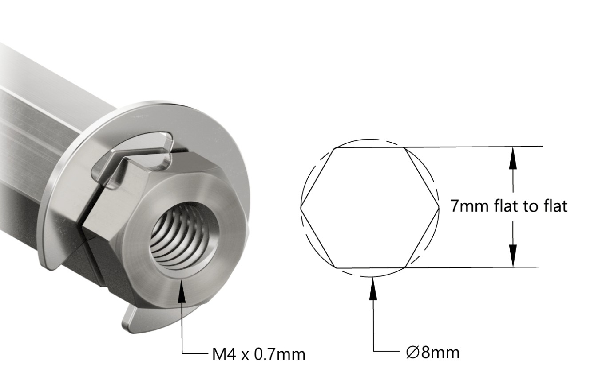
The shaft pictured above has several features worth noting. It has a 7mm flat-to-flat hex profile with an **8mm outer diameter. The end has M4 x 0.7mm threads** -- meaning you can thread an M4 nut directly onto the shaft end to hold parts in place. It also has a groove near the end for an e-clip -- a small C-shaped retaining ring that snaps onto the shaft to prevent parts from sliding off.
onto them and spin together. The flat-to-flat measurement tells you the shaft size. Round bore parts spin freely on a shaft; hex bore parts are locked.
A bearing allows a shaft to spin freely inside a stationary structure. Without bearings, a shaft would grind directly against the aluminum frame, creating friction, heat, and wear.
A common type in robotics is the flanged ball bearing. "Flanged" means the bearing has a thin lip (the flange) around one edge that sticks out wider than the body. This lip hooks over the edge of a mounting hole and prevents the bearing from pushing through.
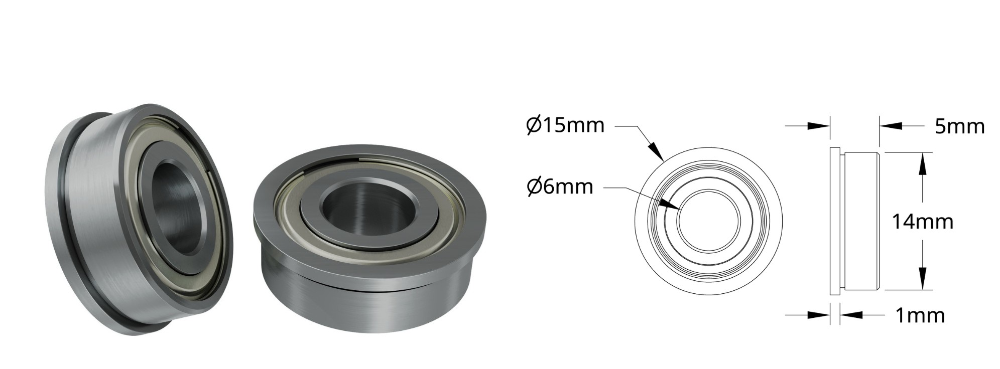
The bearing pictured has a 6mm ID (the shaft goes through the center), a 14mm OD (the body that sits in the mounting hole), and a 15mm flange diameter (the lip that catches the edge). The shaft spins on tiny steel balls sealed inside the bearing -- almost zero friction.
only -- never push on the inner ring or you can damage the balls inside. If a bearing does not slide in easily, check that the hole size matches the bearing OD. Never hammer a bearing in.
A clamping collar (also called a "shaft collar") locks onto a shaft to prevent parts from sliding along it. It is a thick metal ring with a slit and a small screw. When you tighten the screw, the collar squeezes the shaft and holds its position.
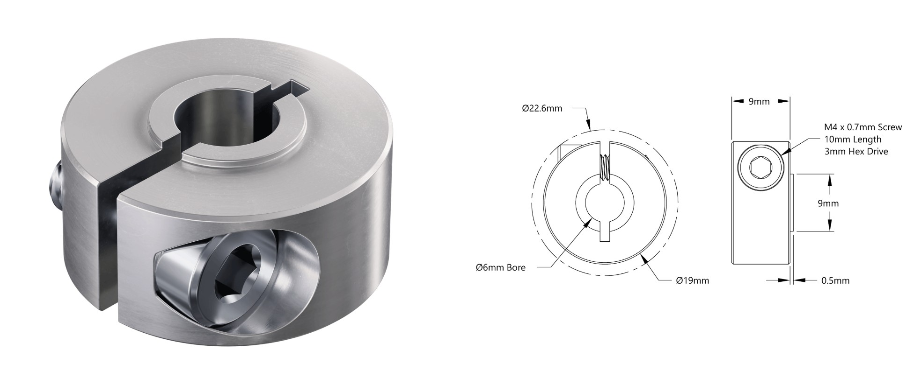
The collar pictured has a 6mm bore (for a 6mm or hex shaft) and uses an M4 x 0.7mm set screw with a **3mm hex drive**. You position the collar exactly where you want it on the shaft, then tighten the screw to lock it in place.
Clamping collars are commonly used next to bearings to keep the shaft from sliding side to side, or between wheels and other parts to set spacing.
Motors spin fast but do not always spin the thing you need them to spin directly. Chains and belts transfer rotational motion from one shaft to another, often with a change in speed or torque.
A sprocket is a toothed wheel that meshes with a chain. A chain loops around two sprockets, and when one sprocket turns, the chain pulls the other one along with it. This is exactly how a bicycle works.
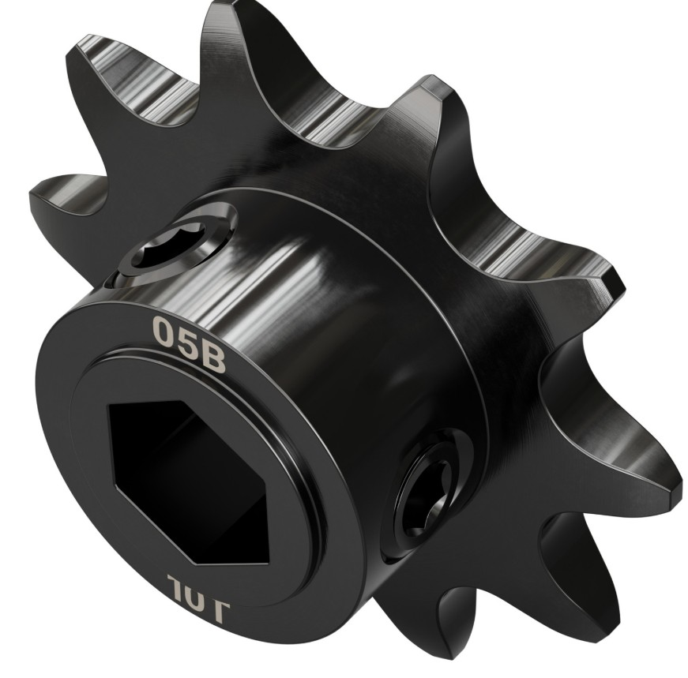
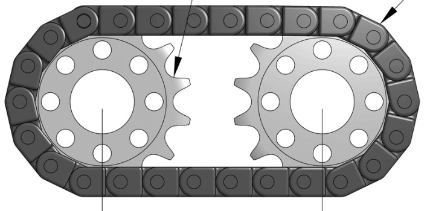
Some building systems use a lightweight plastic chain that snaps together link by link. This makes it easy to size -- just add or remove links to get the right length. Sprockets typically have a hex bore so they lock directly onto hex shafts.
A pulley is a grooved wheel, and a timing belt is a rubber belt with teeth on the inside. The teeth on the belt mesh with grooves on the pulley, so there is no slipping -- when the pulley turns, the belt moves at an exact, predictable rate.
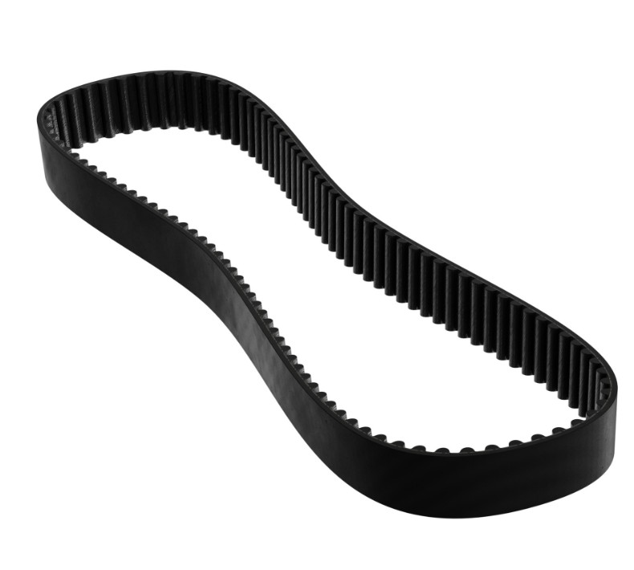
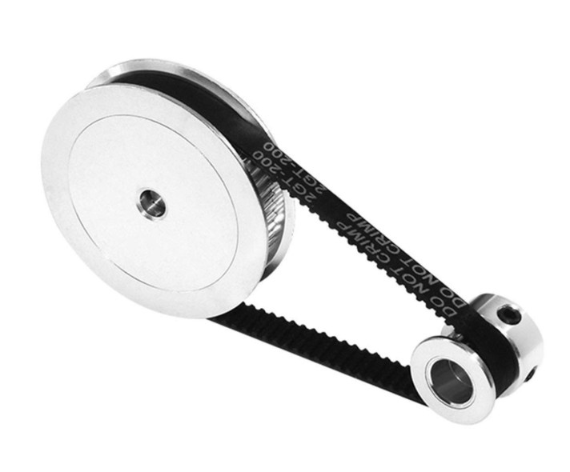
One common type is the GT2 2mm timing belt and pulley. The "2mm" refers to the distance between teeth (the pitch). Timing belts are lighter, quieter, and lower-friction than chains. They are popular for things like intake rollers and linear slides.
for high-torque drivetrains. Timing belts are lighter, quieter, and more precise -- great for mechanisms. Both transfer motion between shafts using toothed wheels.
A flywheel is a heavy, precisely machined disc that mounts to a shaft. Its weight stores rotational energy, which smooths out speed fluctuations. In robotics, flywheels are commonly used in shooters and launchers where you need the wheel to maintain a consistent, high speed even when it hits a game piece.
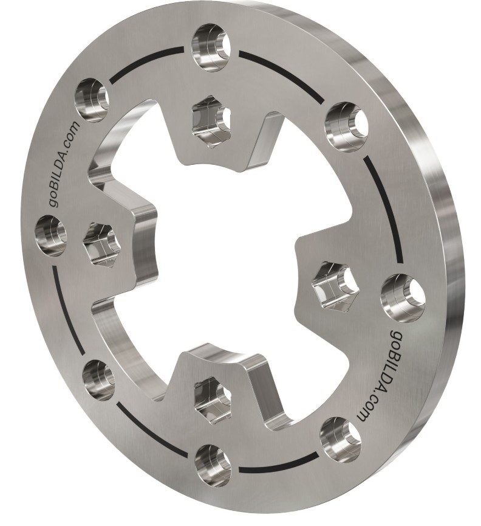
Motors and servos each get their own dedicated lesson later, but here is the 30-second version so you can recognize them.
A DC motor is the muscle of the robot. It spins a shaft when you give it electrical power. Most robotics motors have a built-in gearbox that trades raw speed for more torque (turning force). Motors bolt to the frame and their output shafts connect to wheels, arms, or other mechanisms through gears, chains, or belts.
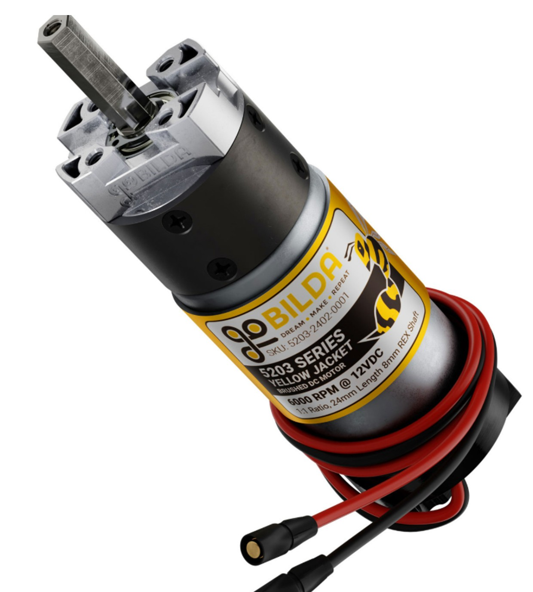
A servo is a small, smart motor that moves to a specific angle and holds its position. Instead of spinning continuously like a drive motor, a servo rotates to a commanded position (like 90 degrees) and stays there. Servos are used for things like claws, wrists, and latches -- anywhere you need precise positional control.
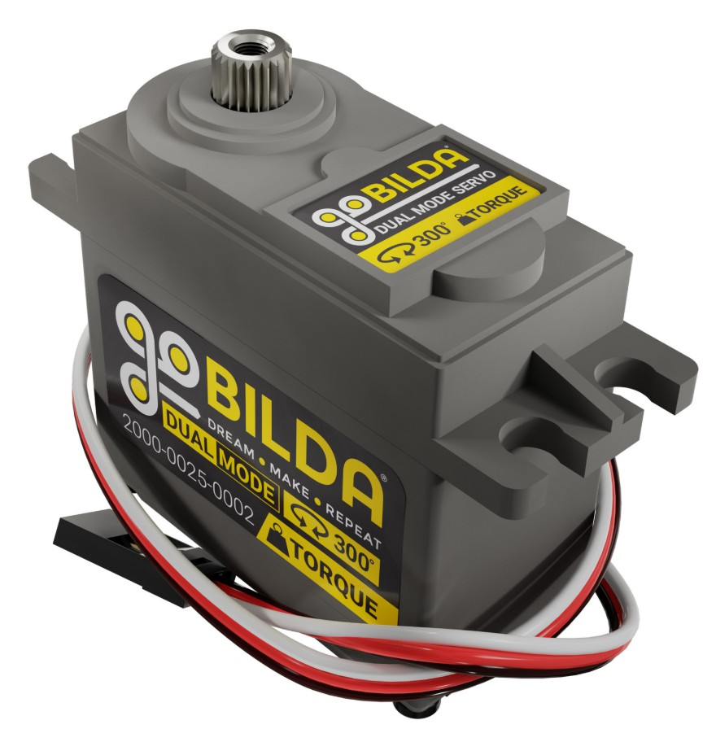
Now that you know the parts, let's talk about the tools used to put them together.
This is the tool you will hold more than any other. The 3mm T-handle hex key (Allen wrench) fits M4 socket head cap screws -- which make up the vast majority of robotics hardware. The T-handle shape gives you much more torque and control than a standard L-shaped Allen wrench.
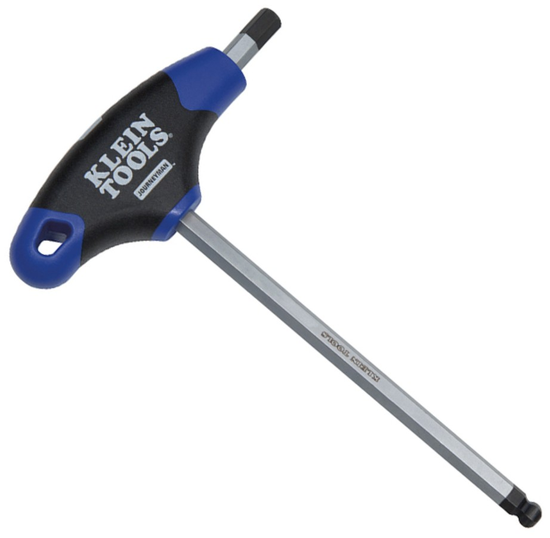
the single most-used tool on a robotics team. Keep one in your pocket at all times during build sessions.
A ratcheting bit driver accepts interchangeable bits (hex, Phillips, Torx, etc.) and has a ratcheting mechanism so you can tighten screws with a quick back-and-forth motion instead of repositioning the tool after every turn. Essential for tight spaces where a T-handle cannot reach.
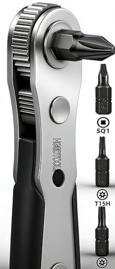
A powered screwdriver (or electric screwdriver) speeds up assembly dramatically -- especially during initial builds when you are driving dozens of screws. A small, low-torque model with adjustable speed is ideal.
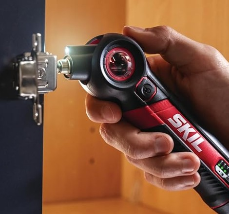
way, then **switch to the hand tool for the final tightening**. Power drivers make it very easy to accidentally over-torque, especially with thread-forming screws in aluminum.
A digital caliper measures dimensions with extreme precision -- to a tenth of a millimeter (0.1mm). It can measure outside dimensions, inside dimensions, and depth.
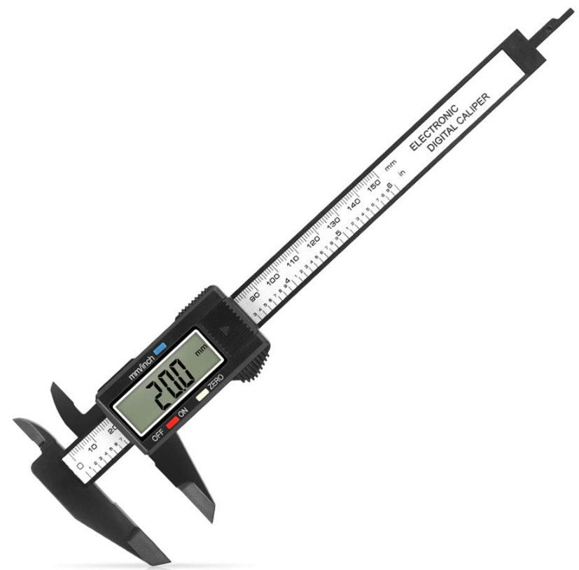
You use a caliper to answer questions like: "Is this screw M3 or M4?" (measure the shaft diameter), "Will this spacer fit over this shaft?" (measure the spacer ID and the shaft OD), or "How long is this standoff?" (measure the length).
A caliper has three measuring surfaces:
things like screw shafts, spacer ODs, and shaft diameters.
inside of holes and slots.
of a hole or step.
measurements. Learn to use one early. If you are ever unsure what size a part is, measure it -- do not guess.
Hardware mistakes are common and totally normal -- especially when you are learning. The key is knowing what they look and feel like so you can catch them early. Here are the big ones.
Stripping happens when the hex key rounds out the inside of the screw's hex socket. Once stripped, the hex key just spins in the socket without gripping, and the screw becomes nearly impossible to remove.
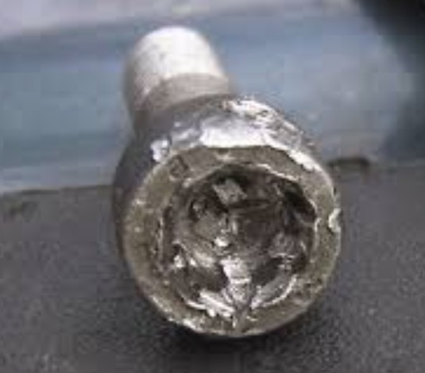
How it happens:
will destroy it quickly)
screw
How to avoid it: Always use the correct size hex key, push straight in, and make sure the key is fully seated before turning.
Thread stripping happens when the threads on a screw or inside a hole are damaged or torn off. The screw turns freely but does not tighten -- the threads have lost their grip.
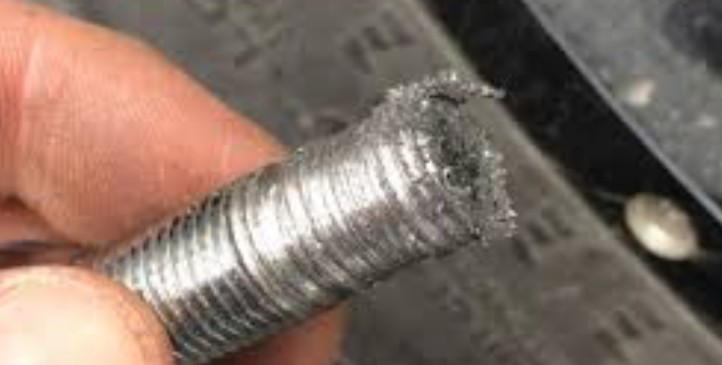
How it happens:
hole too many times
Once threads are stripped, the part is usually ruined. In aluminum, stripped threads often mean replacing the entire channel or plate. This is why controlled tightening matters.
Over-torquing means tightening a screw beyond what is needed. In aluminum, this strips the threads right out of the hole, leaving a smooth, useless bore.
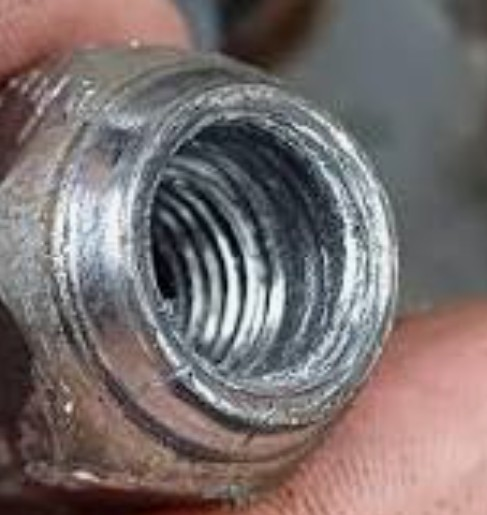
parts are pressed firmly together and the screw does not turn easily by hand, stop. Going further risks stripping the threads. You should feel firm resistance -- not hear creaking or see the aluminum flexing.
Cross-threading happens when a screw enters a nut or threaded hole at an angle instead of straight. The screw threads cut across the hole's threads at an angle, damaging both.
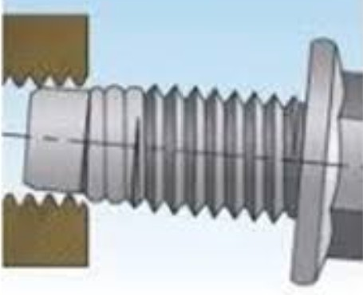
How to tell: The screw feels very stiff to turn from the very first thread, and it may wobble. A properly aligned screw should turn freely by hand for the first few turns.
How to avoid it: Start every screw by hand -- turn it gently with your fingers before reaching for a tool. If it does not feel like it is threading smoothly, back it out and try again. Never force it.
lock nut, turn the screw backwards (counterclockwise) until you feel a small click. That click is the start of the first thread dropping into alignment. Now turn clockwise and it will thread in perfectly. This works for any nut or threaded hole.
Here is a quick reference to keep in your engineering notebook:
| Part | What It Does | |------|-------------| | M4 socket head screw | Holds parts together. 3mm hex key. | | Thread-forming screw | Cuts its own threads into bare holes. | | Nylon lock nut | Resists vibration. Always use these. | | Flat washer | Spreads load, protects surfaces. | | Split lock washer | Spring tension resists loosening. | | Spacer | Holds parts a set distance apart on a screw/shaft. | | Shim | Fine-tunes alignment (0.5-1mm thick). | | Hex shaft | Transmits rotation. Hex shape locks parts. | | Flanged bearing | Lets shaft spin in frame. Flange holds it in hole. | | Clamping collar | Locks position on a shaft. | | Sprocket + chain | Transfers motion between shafts (strong, forgiving). | | Pulley + timing belt | Transfers motion between shafts (light, precise). | | Flywheel | Stores rotational energy for consistent speed. |
| Tool | Main Use | |------|----------| | 3mm T-handle hex key | M4 socket head screws (your #1 tool) | | Ratcheting bit driver | Tight spaces, multiple bit types | | Powered screwdriver | Speed up assembly (finish by hand!) | | Digital caliper | Measure any dimension precisely |
The parts in a robotics building system fit together in a logical way. M4 screws go through 4mm holes, into M4 nuts, driven by 3mm hex keys. Shafts spin in bearings, locked by collars. Chains and belts connect shafts across distances. Every part has a size, a purpose, and a correct way to install it.
When in doubt: measure with a caliper, start screws by hand, and stop tightening when it is snug. Plenty of robots have been slowed down by stripped screws and damaged threads from someone tightening "just a little more."
Take your time, learn the parts, and treat the hardware with respect. The robot will thank you with reliable performance on the field.
Identify each one by name and use a digital caliper to verify at least one measurement (screw diameter, spacer length, or bearing OD). Write your findings in your engineering notebook.